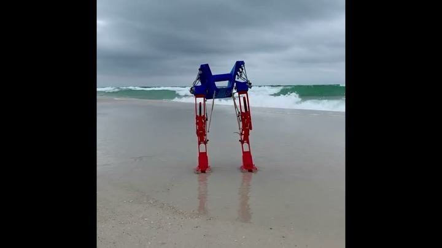
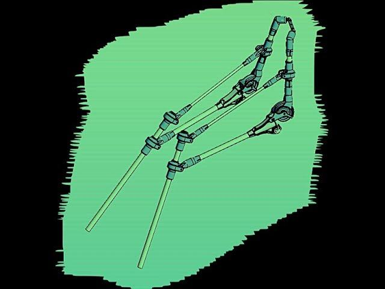
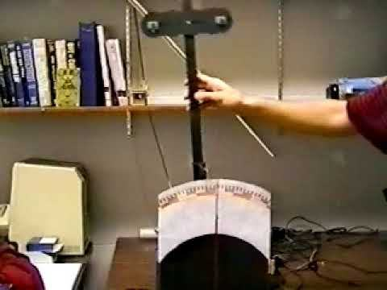
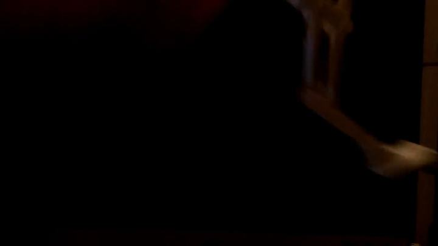
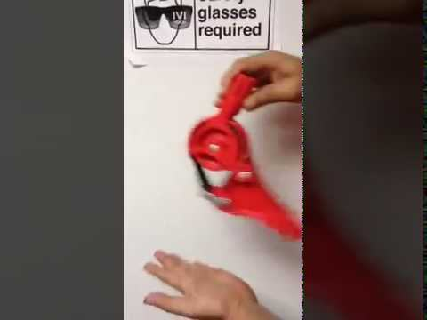

Build your XTI
The XTI Passive Dynamic Robot Walker is 3D-printable. Scale it, print it, tune the ramp, and check your measurements against the model.

Print the legs stiff (PLA or PETG) and the feet soft (TPU) so each heel strike is quiet and grippy. Start on a gentle 3° ramp and adjust the angle until the walker settles into an even rhythm. Then time 10 steps with your phone and compare against the model below.
Interactive
- Model: XTI Passive Dynamic Robot Walker on Cults3D (Chance Robotics).
- Legs and hip: PLA/PETG, 3 walls, 20–30% infill. Keep left and right legs the same mass (weigh them).
- Feet: TPU 95A, curved sole. The roll radius matters as much as leg length.
- Ramp: smooth board with grip tape, adjustable from 2° to 5°. Check the angle with a phone level app.
- Measure: film at 240 fps, count frames between heel strikes, and compare with the step rate above.
AR Quick Look opens on iPhone/iPad in Safari. On other devices use the Walker Lab.
Try this
- Pick your print size and read off the expected step rate.
- Lengthen the legs to 50 cm: the step rate drops by about √2 (time ∝ √l).
- Push the ramp angle past 4.4°: the model warns that the gait is unstable.
- Film your print and compare. A mismatch is a research question, not a failure.
Scaling: for geometrically similar walkers, time scales as √l and speed as √(g l), so dimensionless gait quantities stay the same. A measured step period that deviates from the model points to unmodelled effects: foot roll radius, lateral rocking, knee locking and impact compliance. Fit (a, b, mh/m) from David's STL masses when the files arrive, and validate the model against high-speed video of heel-strike timing.
More from the Xobotix channel

38 s
60 s

Media: Xobotix / Chance Robotics
From the Xobotix lectures
“this drive with these cranks and belts are making this point on the leg go through an ellipse and because it's a zig zag pantograph the feet go through a similar [path]”
XTI – Trial and Error (IHMC FastRunner team) · 03:22 · auto-captions, [corrections] ours
“we let the … compliant toe be the tire we want a soft suspension so the slightest bump in the road doesn't send us jumping”
Johnny Godowski, Part 7 · 00:03 · auto-captions, [corrections] ours
Quotes are YouTube auto-captions from the Xobotix channel. [Brackets] mark our corrections of misheard words, and timestamps open the video at that spot. Full notes: research/SCIENCE_FROM_LECTURES.md.